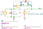

"PhZbwLimit"
.source I1
.detector V_out
.lgref E1
C1 1 out C value={C_f} vinit=0
C2 1 0 C value={C_s} vinit=0
E1 out 0 1 0 E value={A/(s*(1+s*tau_2))}
I1 0 1 I value=0 noise=0 dc=0 dcvar=0
R1 1 out R value={R_f} noisetemp=0 noiseflow=0 dcvar=0 dcvarlot=0
.end
| RefDes | Nodes | Refs | Model | Param | Symbolic | Numeric |
|---|---|---|---|---|---|---|
| C1 | 1 out | C | value | $C_{f}$ | $C_{f}$ | |
| vinit | $0$ | $0$ | ||||
| C2 | 1 0 | C | value | $C_{s}$ | $C_{s}$ | |
| vinit | $0$ | $0$ | ||||
| E1 | out 0 1 0 | E | value | $\frac{A}{s \left(s \tau_{2} + 1\right)}$ | $\frac{A}{s \left(s \tau_{2} + 1.0\right)}$ | |
| I1 | 0 1 | I | value | $0$ | $0$ | |
| noise | $0$ | $0$ | ||||
| dc | $0$ | $0$ | ||||
| dcvar | $0$ | $0$ | ||||
| R1 | 1 out | R | value | $R_{f}$ | $R_{f}$ | |
| noisetemp | $0$ | $0$ | ||||
| noiseflow | $0$ | $0$ | ||||
| dcvar | $0$ | $0$ | ||||
| dcvarlot | $0$ | $0$ |
| Name | Symbolic | Numeric |
|---|
| Name |
|---|
| $\tau_{2}$ |
| $R_{f}$ |
| $C_{s}$ |
| $A$ |
| $C_{f}$ |
Go to PhZbwLimit_index
SLiCAP: Symbolic Linear Circuit Analysis Program, Version 2.0.1 © 2009-2024 SLiCAP development team
For documentation, examples, support, updates and courses please visit: analog-electronics.tudelft.nl
Last project update: 2024-10-20 16:56:38